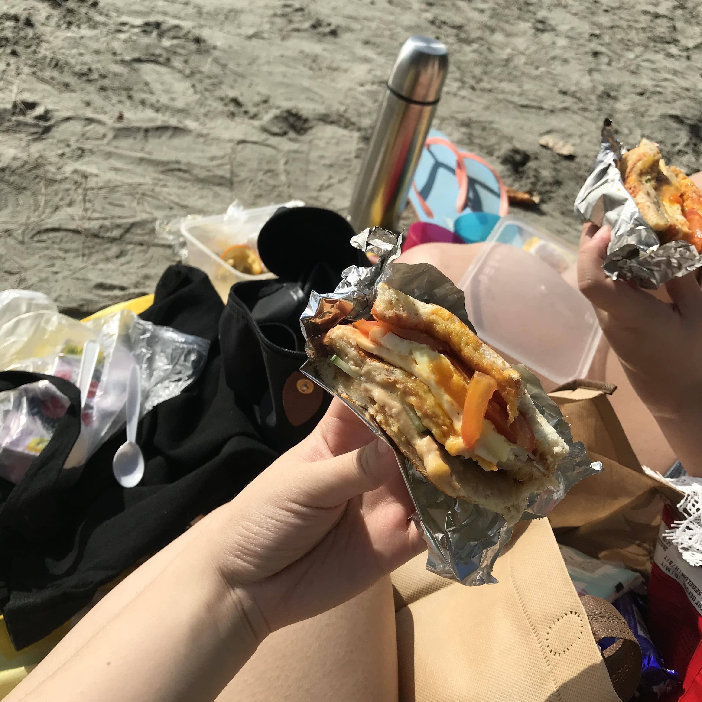
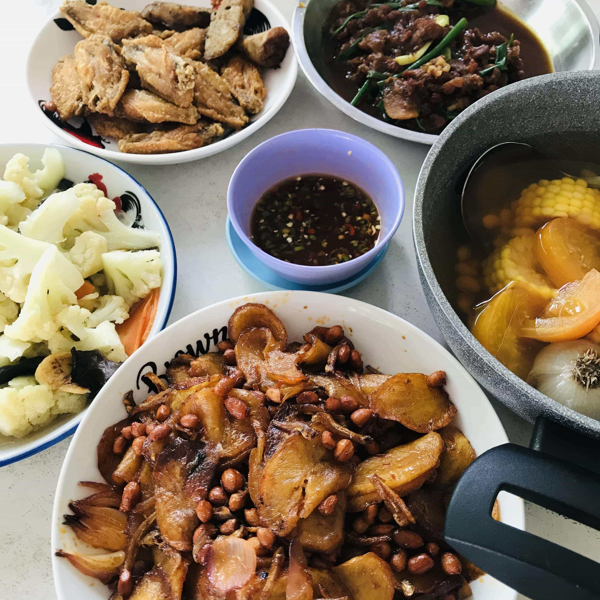

一個快樂的周末
這是一次可以說是很簡單規劃又隨性的出遊，會出來玩的原因是因為她說她想到海邊去玩，而自己的啊嫲家就在河畔，也離海邊不遠，因此就決定一起來玩了！而且她也剛剛好考完了A-Level的Trial所以就一起去放松一下吧！
Phrase 1 : 20/3/2021
早上6點30分，我就出發去了QH的家，不過到了過後發現早餐還沒弄好，她也還沒洗澡，於是我就去幫忙她媽媽一起弄早餐，她則先洗漱裝扮。由於多煎了幾粒雞蛋，因此QH媽媽叫我們先吃，「肢體障礙」的我居然不知道那是爆漿蛋然後在出發前就把衣服弄骯臟了wow...不過洗了一下就好了，我第一次駕車上Highway！真的莫名緊張哈哈哈哈而且是0割車哈哈哈就慢慢走，大概到了8.30才抵達Desaru結果Public Beach沒開放！因為我們是沒有book resort的哈哈哈我們回去阿嫲家住所以也沒不能進去私人海灘所以就轉戰TanjungBalau，期間由於不放棄還特地轉進那些小路看看有沒有辦法去到結果進到了一個奇怪的地方哈哈哈。然後終於來到了Tanjung Balau很興奮很久沒有看到海了樂開花，結果有一個guard來趕我們出去講不能進來我們都懵逼了居然不能進來嗎可是還是拍下了一些照片，然後真的是萬幸中的萬幸，好人會有好報！有一個地頭蛇馬來人Uncle告訴我們附近有個叫Tanjung Lompat的海灘，他也住在那裏，我們可以去那裏野餐什麽的，真的非常感謝他！然後我們就出發去那兒了，雖然路途上又走錯了一個地方跑到一個不懂什麽青年部，可是最後還是成功抵達，那一刻真的超感動！我們找到了一個Parking過後就拿著野餐的東西走啊走找到了一個地方，一開始本來打算坐靠近海灘的地方，但是後來發現我們的Tilam布很快就會濕掉所以就找了一個幹燥泥土而已有遮蔽的地方！（沒錯我們沒有Picnic Mat我們用的是沒有要用了的Tilam布哈哈哈哈）然後就開始快樂的野餐，可是有狗狗一直圍著我們555我真的是好怕QH簡直是男友力MAX了會一直讓我覺得很鎮定哈哈哈哈，她做的三文治真的超級好吃！然後我還有就是買了Season的面包所以連續吃了2個面包哈哈哈，在去玩水前為了避免危險就把車子駕過來我們的野餐地旁邊（好蠢一開始沒有直接這樣）然後我們就開始玩水！真的很開心啦很久沒有來到海灘了，這裏由於很少人進來所以水都很清澈，垃圾也沒有像Desaru那麽多，雖然陸陸續續有看到人進來，但是不是巨大的人流的那種，然後我就開始一系列亂玩水哈哈哈真的很開心無法用文字描述，整個海岸線的一部分還是有礁石的，不註意看腳一定會被插到流血哈哈哈！所以也蠻危險我們還會發現一些物種如海帶，還有超大粒的貝殼，不過最後全部都回歸海洋啦！真的是玩到很盡興而且很感謝老天爺作美❥(^_-) 沒有下雨真的是太好了本來我們想要躺下去玩水但是想到好像沒有洗澡的地方然後等下還要坐車所以就沒有躺下去水裏面算是可惜了一點點但是還是很開心！大概11點左右我們就打算回去Teluk Sengat也就是我的啊嫲家吃午餐了！回家的路程也很開心（哈哈哈哈其實是因為真的沒有跟朋友2個人這樣子出來過第一次全新的體驗所以什麽都開心哈哈哈哈）然後到了啊嫲家，馬上上樓沖涼哈哈哈然後再下去吃飯。啊嫲今天午餐煮了好吃的老鼠粉！吃飽午餐的我們到處去走走，去了鄰居阿姨的家拿東西（QH被復古的房屋設計驚艷到然後拍了一些照片，哈哈太可愛了！）下午3點多的時候我們還去了附近的鱷魚園哈哈哈說真的在這裏住了那麽久我也第一次去這裏的鱷魚園，也是第一次摸鱷魚！最讓我們氣喘籲籲的就是腳踏車之旅了哈哈哈我們居然踏腳車去了位於上坡路上的鱷魚園真是非常的好笑，最後我們居然是在推、踏、推、踏這樣的流程徘徊哈哈哈哈真的是太久沒有騎腳車的兩個人，感覺骨頭都硬掉了簡直是不要太幸運，這裏一個月只會有2天PasarMalam，我也沒有預料到會是20號那麽準，然後我們就到Pasar Malam搜羅晚餐，唉可惜了買錯食物！沒有吃到Mi Sup Kambing 還有Murtabak是一回事，居然還被騙，以為是Cempedak，結果買了3塊錢的雞胗回去！哈哈哈哈QH也買了一些食物來吃，到這裏一天差不多就結束啦，在上樓前我們先去把腳踏車還給鄰居阿姨了，然後就差不多洗洗睡了，由於太累，直接秒睡哈哈哈！.
Phrase 2: 21/3/2021
QH告訴我她淩晨5.30就醒了哈哈哈我9點鐘才醒來呢！今天的早餐是啊嫲打包的Nasi lemak還有昨天沒有吃到的yogurt＋馬來糯米糕，吃飽早餐下樓時的我突然有想要和QH駕車逛逛Kampung的想法哈哈哈（其實昨天本來是想踏腳車一遊的但是體力不允許哈哈哈...）然後我們先是去了姨丈的漁場，看看魔鬼魚還有打架魚可愛的模樣，QH還帶走了一只粉紅色的可愛打架魚回去陪她一起讀書哈哈！然後就是在到處溜達溜達，本來還想進去小學看看哈哈哈但是因為他們還在上課所以被勸退。然後就是去到了Johor Lama，裏面也是沒什麽，但是就是很安靜很安靜，傍晚來的話應該會很好看，但是現在是大早上哈哈哈哈所以就看看河畔的風景吧~回家吃午餐前的最後一站是鄰居WQ阿姨的家，跟她拿了一點西瓜回家哈哈哈，今天的午餐有鱷魚肉哦哈哈哈！阿姨說悶了4個小時，所以才能口感那麽軟，然後還有我最愛的馬鈴薯配花生哈哈哈!2天1夜的遊記就這樣結束啦，下午回家的時候天氣依然很好，希望以後還有機會像這樣和朋友一起出來玩耍，大家已經陸陸續續開始在準備入學了，也祝福我的朋友一定要一路快樂！